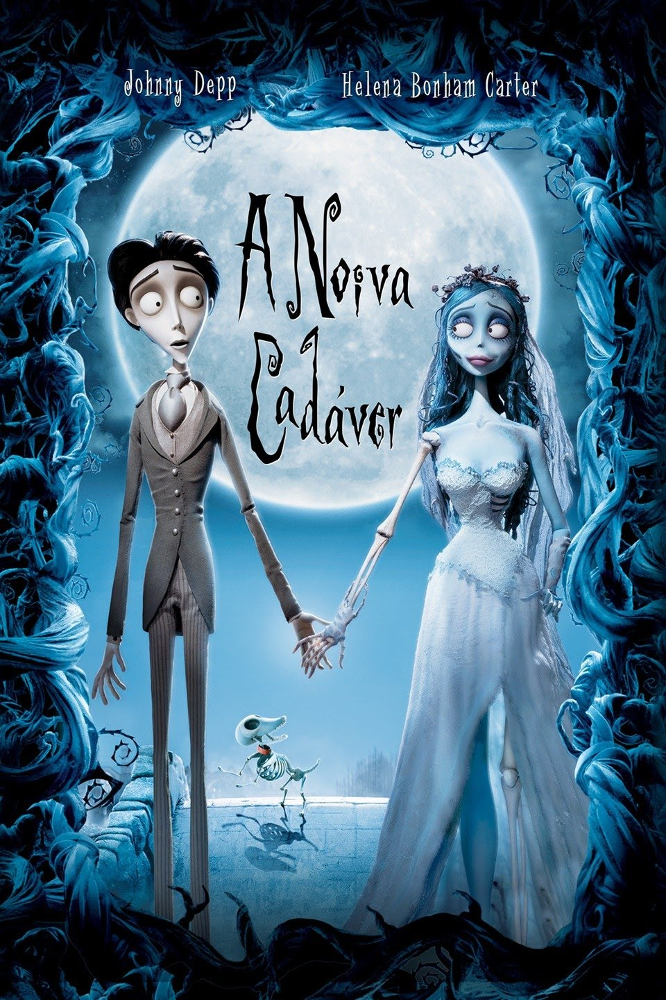

Ratatouille
Remy reside em Paris e possui um sofisticado paladar. Seu sonho é se tornar um chef de cozinha e desfrutar as diversas obras da arte culinária. O único problema é que ele é um rato. Quando se acha dentro de um dos restaurantes mais finos de Paris, Remy decide transformar seu sonho em realidade.
O Estranho Mundo de Jack
Jack Skellington, o Rei das Abóboras, se cansa de fazer o Dia das Bruxas todos os anos e deixa os limites da cidade. Por acaso, acaba atravessando o portal do Natal, onde vê a alegria do espírito natalino.
A Noiva-Cadáver
As famílias de Victor e Victoria estão arranjando seu casamento. Nervoso com a cerimônia, Victor vai sozinho à floresta para ensaiar seus votos. No entanto, o que ele pensava ser um tronco de árvore na verdade é o braço esquelético de Emily, uma noiva que foi assassinada depois de fugir com seu amor.

Shrek
Um ogro tem sua vida invadida por personagens de contos de fadas que acabam com a tranquilidade de seu lar. Ele faz um acordo pra resgatar uma princesa.
Bee Movie
A recém-formada abelha Barry acha a vida de trabalhar com mel desinteressante. Ele voa fora da colmeia pela primeira vez e conversa com um humano, quebrando uma primordial regra de sua espécie. Barry descobre que humanos têm roubado e comido mel há séculos e decide processar a humanidade.
Rio
Capturada por contrabandistas de animais quando tinha acabado de nascer, a arara Blu nunca aprendeu a voar e vive uma vida domesticada feliz em Minnesota, nos Estados Unidos, com sua dona, Linda. Blu pensa que é a última arara de sua espécie.

Monstros S.A
A maior fábrica de monstros do mundo conta com James Sullivan, um dos monstros mais assustadores, que tem o pelo azul e chifres, além de seu assistente e melhor amigo Mike, um monstro verde de um olho só.
Star Wars: A Vingança dos Sith
As Guerras Clônicas estão em pleno andamento e Anakin Skywalker mantém um elo de lealdade com Palpatine, ao mesmo tempo em que luta para que seu casamento com Padmé Amidala não seja afetado por esta situação.

Harry Potter e o Prisioneiro de Azkaban
É o início do terceiro ano na escola de bruxaria Hogwarts. Harry, Ron e Hermione têm muito o que aprender. Mas uma ameaça ronda a escola e ela se chama Sirius Black.
Indiana Jones e o Reino da Caveira de Cristal
Durante a Guerra Fria, Indiana Jones e o jovem Mutt buscam a Caveira de Cristal, um objeto místico de grande valor, mas logo percebem que não estão sozinhos.